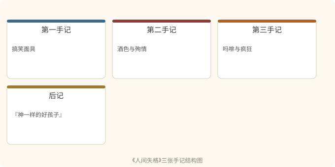

人间失格
一、基本信息
| 作者 | 太宰治 |
|---|---|
| 成书/出版 | 1948年发表（Britannica：Ningen shikkaku (1948; No Longer Human)） Dazai Osamu — Encyclopaedia Britannica（百科全书） |
| 国别/地区 | 日本 |
| 时代 | 现当代 · 20世纪 |
| 体裁 | 中篇小说 |
| 语言 | 日语 |

《人间失格》三张手记结构图（主题·结构图）
二、创作背景
Britannica：战后作品（含《人间失格》）的语调 'becomes increasingly despairing, reflecting the emotional crisis of the author'（愈益绝望，映照作者的情感危机）。
Britannica：'His dark, wry tone perfectly captured the confusion of postwar Japan, when traditional values were discredited'（阴郁自嘲的笔调捕捉了战后日本的混乱）。
三、内容脉络
序言：三张照片（笑之诡异）——三篇手记拼贴大庭叶藏的一生（通说）。
叶藏：以『搞笑』讨好世界→酒、药、女人→殉情未遂→吗啡→精神病院→『人间失格』（通说）。
结尾 barber 店老板娘一句：『我们认识的小叶……是个像神一样的好孩子』（通说待核）。
四、主要人物表
| 人物 | 身份 | 说明 |
|---|---|---|
| 大庭叶藏 | 没落子弟 | 『生而为人』的恐惧（通说） |
| 堀木 | 损友 | 堕落的同行者 |
| 良子 | 妻子 | 信任的毁灭（通说） |
五、主题与艺术特点
- 『人间失格』：丧失做人的资格（通说）。
- 羞耻与讨好：以滑稽面具求生（通说）。
- 纯真与毁灭：信任被践踏的必然（通说）。
六、影响与评论
- Britannica：与《斜阳》并列战后代表作，经 Donald Keene 英译走向世界。
Dazai Osamu — Encyclopaedia Britannica（百科全书） - Britannica：太宰治为战后日本最重要的文学声音之一（the leading literary voice of postwar Japan 语境）。
Dazai Osamu — Encyclopaedia Britannica（百科全书）
七、阅读建议
难点
- 手记体的『自我否定』叙述——读者须与叙述者保持距离。
- 战后日本价值崩解的时代底色。
- 烨伊译本（作家出版社，通说待核）。
- Donald Keene 英译本（No Longer Human）。
先《斜阳》后本作；对照《维庸之妻》。
八、待核实
- 1948年发表（《展望》连载与筑摩书房单行本说）待核。
- 『生而为人，我很抱歉』归属辨析待核。
- 叶藏原型与作者生平的对应（自传性说）待核。
本页主要来源
太宰治的其他收录作品：人间失格